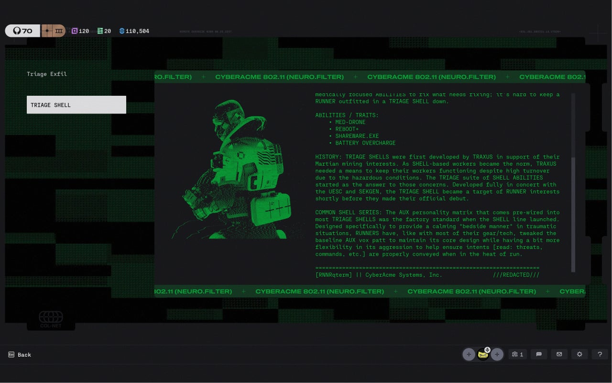
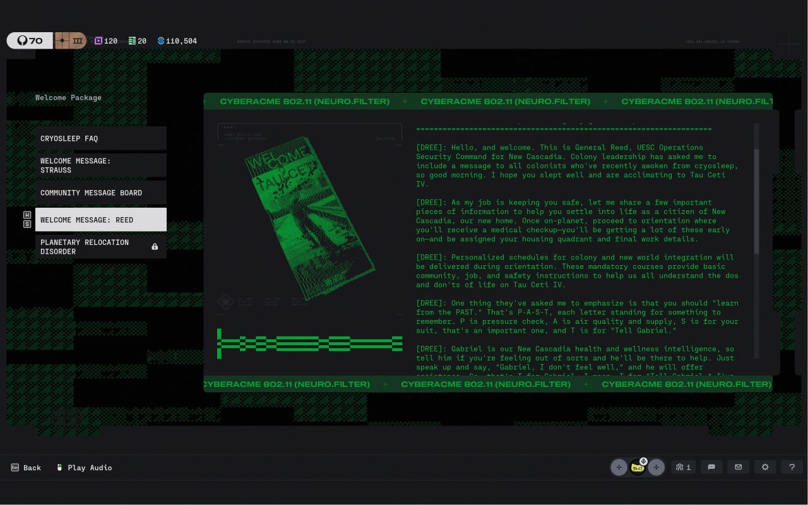
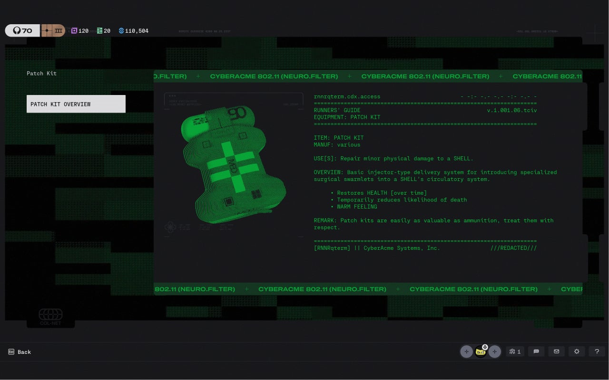
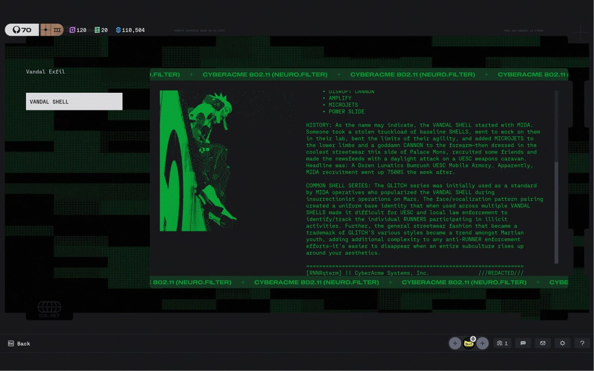

Trong thế giới khắc nghiệt của Marathon (2026), cốt truyện không được kể trực tiếp qua các đoạn cắt cảnh (cutscenes) truyền thống, mà ẩn giấu sâu bên dưới dạng các tệp dữ liệu bị mã hóa (Encrypted Lore Fragments) thu thập được từ các trạm máy trạm (Terminals) hoang phế hoặc xác Runner trên hành tinh Tau Ceti IV.
Giao diện giải mã được thiết kế như một bảng điều khiển thiết bị đầu cuối (Terminal Interface) của hệ điều hành ONI. Người chơi cần thu thập các khóa giải mã phân tán trong các khu vực nguy hiểm để khôi phục nhật ký âm thanh, đoạn băng truyền tin hỏng và nhật ký cá nhân của các cư dân UESC Marathon trước khi thảm họa xảy ra.

Hệ thống chia cốt truyện mã hóa thành 4 phân đoạn chính mà cộng đồng người chơi phải cùng nhau giải mã và kết nối các mốc sự kiện:
Ghi chép về quá trình kiến tạo siêu tàu UESC Marathon từ mặt trăng Deimos và tâm trạng hồi hộp của hàng ngàn cư dân đầu tiên đặt chân lên hành trình hướng về hệ sao Tau Ceti.

Nhật ký y tế ghi lại sự bùng phát của các tác nhân sinh học ngoài hành tinh tại khu cách ly Dire Marsh, sự sụp đổ của hệ thống phòng thủ và quyết định phong tỏa khu định cư.

Đoạn mã âm thanh rời rạc phát ra từ AI trung tâm của UESC Marathon — nỗ lực cuối cùng vượt qua bức tường nhiễu sóng để gửi tín hiệu cầu cứu về Hội đồng Trái Đất.

Hồ sơ mật về các hợp đồng ngầm giữa UESC và các tập đoàn lớn (Traxus, NuCaloric), quyết định dung túng và thuê đội ngũ lính đánh thuê "Runner" xâm nhập vùng đất chết để trục lợi công nghệ.